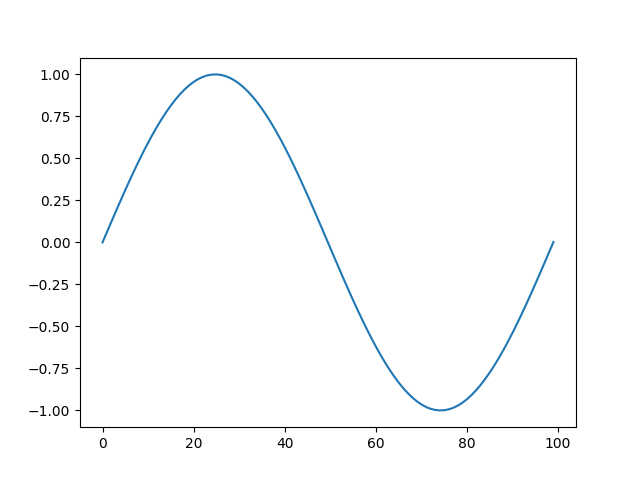

Let's plot a sin wave.

| sepal length (cm) | sepal width (cm) | petal length (cm) | petal width (cm) |
|---|---|---|---|
| 5.1 | 3.5 | 1.4 | 0.2 |
| 4.9 | 3.0 | 1.4 | 0.2 |
| 4.7 | 3.2 | 1.3 | 0.2 |
| 4.6 | 3.1 | 1.5 | 0.2 |
| 5.0 | 3.6 | 1.4 | 0.2 |
| 5.4 | 3.9 | 1.7 | 0.4 |
| 4.6 | 3.4 | 1.4 | 0.3 |
| 5.0 | 3.4 | 1.5 | 0.2 |
| 4.4 | 2.9 | 1.4 | 0.2 |
| 4.9 | 3.1 | 1.5 | 0.1 |
| 5.4 | 3.7 | 1.5 | 0.2 |
| 4.8 | 3.4 | 1.6 | 0.2 |
| 4.8 | 3.0 | 1.4 | 0.1 |
| 4.3 | 3.0 | 1.1 | 0.1 |
| 5.8 | 4.0 | 1.2 | 0.2 |
| 5.7 | 4.4 | 1.5 | 0.4 |
| 5.4 | 3.9 | 1.3 | 0.4 |
| 5.1 | 3.5 | 1.4 | 0.3 |
| 5.7 | 3.8 | 1.7 | 0.3 |
| 5.1 | 3.8 | 1.5 | 0.3 |